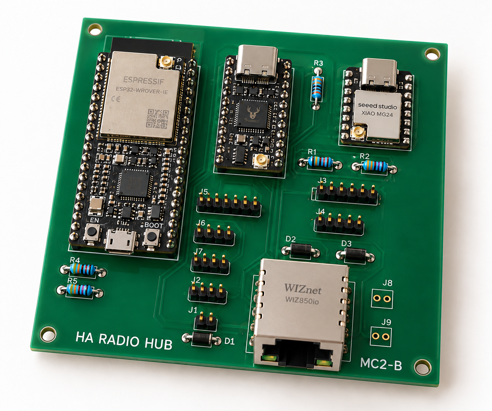
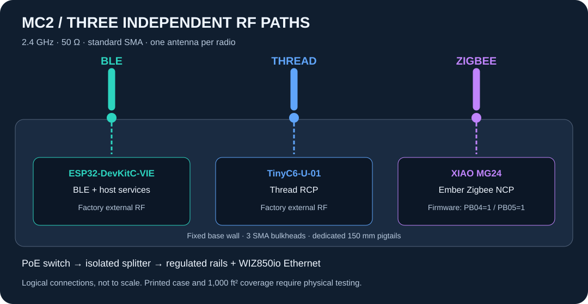
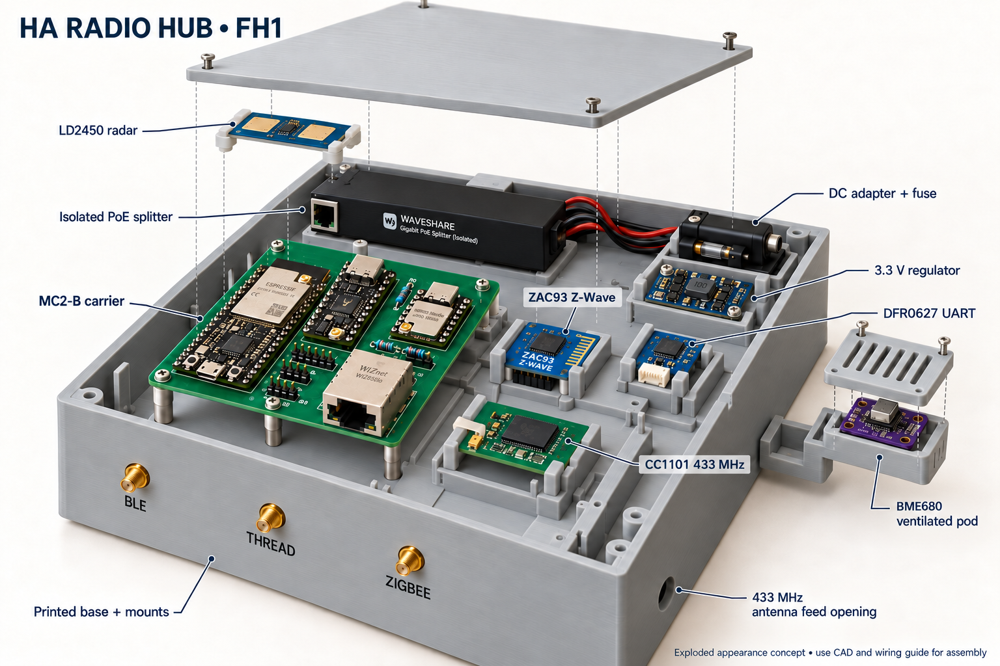

HA RADIO HUB / MC2-B / 19 OCTOBER 2026
Give every radio
its own antenna.
A dedicated external path for Zigbee, Thread and Bluetooth, with the existing local Home Assistant functions preserved on a wired PoE connection.
Engineering prototype. The carrier, software and printed enclosure have separate digital checks. Physical fit, simultaneous-radio operation and coverage of a 1,000 ft² house remain unmeasured. MC1 and MC2-A files are historical; MC2-A S3 boards and firmware are not interchangeable with MC2-B.

AI-generated MC2-B appearance concept with ESP32-DevKitC-VIE and two additional boot resistors. Module internals, pin counts and copper are approximate; use the native drawing below for assembly. Antennas are omitted for visibility; connect all three before operation. Image provenance · Exact shopping list and AliExpress checks

3 × 2.4 GHzSeparate 50 Ω antenna feeds; no shared RF combiner.
100 × 100 mmTwo-layer carrier. All components on one side. Through-hole module attachment.
215 × 215 × 78 mmFull-hub main shell, with dedicated module mounts and an attached ventilated BME680 pod.
Exact modules, not generic substitutes
- U1 — ESP32-DevKitC-VIE
Factory external antenna, 8 MB flash and 8 MB quad PSRAM. Two 19-pin factory headers; GPIO1/3 stay reserved for USB-UART. R4/R5 hold GPIO12/2 LOW at reset. Legacy BLE4.2 only; no BLE5 extended advertisements or Coded PHY. - U2 — Unexpected Maker TinyC6-U-01
Original U.FL variant, native USB, 8 MB flash. Solder its supplied 1×12 and 1×11 headers. Carrier pull-up R3 holds its GPIO8 strap high for ROM recovery; no LiPo fitted. - U3 — Seeed XIAO MG24 pre-soldered 102010690
Pre-soldered header version. Ember UART with hardware flow control; external antenna selected before startup with PB04=1 and PB05=1. - U4 — WIZ850io finished module
3.3 V SPI Ethernet module with two 1×6 headers. Its jack receives data downstream of the separate PoE splitter.
Availability: TinyC6-U-01 was backorder/on-request in the checked listings. Verify the U.FL SKU before ordering. TinyC6[D], H2 and onboard-antenna variants are not interchangeable with this design.
Antenna and cable selection
Buy three TE ANT-2.4-LCW-SMA antennas (2400–2485 MHz, 2.8 dBi peak) and three Amphenol 095-902-545-150 cables. Standard SMA male antenna mates with a standard SMA female bulkhead; the radio end is AMC/U.FL compatible. RP-SMA and smaller MHF connector variants are not substitutes.
BLE, THREAD and ZIGBEE bulkheads stay on the fixed base. Their 65 mm adjacent pitch is a layout target, not an isolation measurement. Leave slack, use strain relief and test the 150 mm cable route. Connect antennas before powering the radios.
Full assembly and Z-Wave placement

AI illustration; dimensions and connections come from the CAD and wiring below. Zooz ZAC93 sits in a separate insulated cradle beside the carrier. Its underside 2×5 socket connects by a remapped harness to J4, while the DFR0627 UART bridge connects to J3. Complete assembly and ZAC93 pin map.
These images are design renders. Print the connector fit coupon first. Dedicated trays retain the isolated splitter, buck converter, UART bridge, Z-Wave, CC1101, DC adapter and fuse. The radar mounts behind the lid window; BME680 sits in an attached ventilated pod outside the warm shell. Exact purchased heights, connector fit, thermal behavior and RF performance remain unmeasured. Full-hub wiring diagram · Full assembly inventory.
Which wire goes where?
Choose a carrier connector to see both ends of every wire. J4 pad 4 goes to ZAC93 physical pin 8, not pin 4. The carrier has seven off-board harnesses; a connector's pad order does not imply the order on the attached device.
Carrier component-side view, in the same orientation as the native assembly drawing. The square pad is pin 1. Looking into a cable socket reverses the apparent order; identify contacts by continuity, not by wire colour. Locate J1–J7 on the carrier.
33 wire connections across 7 connectors.
No matching wire. Clear the search or choose All connectors to broaden the lookup.
J1 Isolated PoE splitter / fused 5 V input
Carrier component side · square pad = pin 1 · not a cable mating view
The selected Waveshare splitter provides regulated 5 V. Its data-only RJ45 lead goes to WIZ850io U4. No raw PoE voltage enters J1. Confirm polarity with a meter.
J1 carrier pad to Isolated PoE splitter / fused 5 V input contact| Carrier pad / net | Other end / signal direction |
|---|
J1.1+5V | ← Device to carrierSplitter +5 V, after inline fuse5 V power enters the carrier |
|---|
J1.2GND | — Common groundSplitter GNDCommon ground return |
|---|
Assembly details for J1
J2 Pololu D24V22F3 buck converter
Carrier component side · square pad = pin 1 · not a cable mating view
Identify VIN, VOUT and GND on the actual regulator; this is a harness map, not its physical pad order. Both ground wires may terminate at the same regulator ground node. Leave EN and PG unused.
J2 carrier pad to Pololu D24V22F3 buck converter contact| Carrier pad / net | Other end / signal direction |
|---|
J2.1+5V | → Carrier to deviceVINCarrier 5 V supplies the regulator |
|---|
J2.2GND | — Common groundGNDInput ground return |
|---|
J2.3+3V3 | ← Device to carrierVOUT (3.3 V)Regulator powers the peripheral 3.3 V rail |
|---|
J2.4GND | — Common groundGNDOutput ground return |
|---|
Assembly details for J2
J3 DFRobot DFR0627 / WK2132 UART bridge
Carrier component side · square pad = pin 1 · not a cable mating view
These six wires reach separate I²C and UART1 contacts, not one six-pin module header. Set IA1 = 1 and IA0 = 1: register 0x70, FIFO 0x71; UART1 115200 8N1. UART2, RST and IRQ remain unused.
J3 carrier pad to DFRobot DFR0627 / WK2132 UART bridge contact| Carrier pad / net | Other end / signal direction |
|---|
J3.1+3V3 | → Carrier to device+ / VCCPeripheral 3.3 V; do not supply 5 V |
|---|
J3.2GND | — Common ground− / GNDCommon ground return |
|---|
J3.3I2C_SDA | ↔ BidirectionalD / SDAI²C data, host GPIO21 |
|---|
J3.4I2C_SCL | → Carrier to deviceC / SCLI²C clock, host GPIO22 |
|---|
J3.5ZWAVE_RX | ← Device to carrierUART1 T / TX1Bridge transmitter → J4.4 → ZAC93 pin 8 RX |
|---|
J3.6ZWAVE_TX | → Carrier to deviceUART1 R / RX1ZAC93 pin 10 TX → J4.5 → bridge receiver |
|---|
Assembly details for J3
J4 Zooz ZAC93 Z-Wave board
Carrier component side · square pad = pin 1 · not a cable mating view
Remapped five-wire harness into the underside 2×5 socket; not a straight-through ribbon. Verify the actual 3V3 / GND / RX / TX markings and Zooz numbering before mating. Leave ZAC93 pins 2, 3, 4, 5 and 7 unconnected. Pin 7 is RESET on hardware 2.
J4 carrier pad to Zooz ZAC93 Z-Wave board contact| Carrier pad / net | Other end / signal direction |
|---|
J4.1+3V3 | → Carrier to devicePhysical pin 1 — 3V3Peripheral 3.3 V supply |
|---|
J4.2GND | — Common groundPhysical pin 6 — GNDFirst ground return |
|---|
J4.3GND | — Common groundPhysical pin 9 — GNDSecond ground return |
|---|
J4.4ZWAVE_RX | → Carrier to devicePhysical pin 8 — RXJ3.5 / bridge TX1 → ZAC93 receiver |
|---|
J4.5ZWAVE_TX | ← Device to carrierPhysical pin 10 — TXZAC93 transmitter → J3.6 / bridge RX1 |
|---|
Assembly details for J4
J5 CC1101 433.92 MHz radio
Carrier component side · square pad = pin 1 · not a cable mating view
Use signal names on the retained module; clone pin order is not standardized. Keep this harness short with ground beside clock/data wires: WIZ850io also puts 10 MHz edges on the shared SPI clock. Retain the 433.92 MHz antenna.
J5 carrier pad to CC1101 433.92 MHz radio contact| Carrier pad / net | Other end / signal direction |
|---|
J5.1+3V3 | → Carrier to deviceVCCPeripheral 3.3 V supply |
|---|
J5.2GND | — Common groundGNDCommon ground return |
|---|
J5.3SPI_SCK | → Carrier to deviceSCLK / SCKSPI clock from host GPIO12 |
|---|
J5.4SPI_MOSI | → Carrier to deviceSI / MOSISPI data from host GPIO2 |
|---|
J5.5SPI_MISO | ← Device to carrierSO / MISOSPI data to host GPIO19 |
|---|
J5.6RF_CS | → Carrier to deviceCSn / CSRF chip select from host GPIO13 |
|---|
J5.7RF_GDO0 | → Carrier to deviceGDO0Transmit path from GPIO25; open-drain with carrier 4.7 kΩ pull-up |
|---|
J5.8RF_GDO2 | ← Device to carrierGDO2Receive path to host GPIO35 |
|---|
Assembly details for J5
J6 Hi-Link LD2450 radar
Carrier component side · square pad = pin 1 · not a cable mating view
5 V supply, 3.3 V UART logic; 256000 baud. Identify 5V / GND / RX / TX markings on the module, not wire colours or an assumed cable order.
J6 carrier pad to Hi-Link LD2450 radar contact| Carrier pad / net | Other end / signal direction |
|---|
J6.1+5V | → Carrier to device5VFused 5 V supply |
|---|
J6.2GND | — Common groundGNDCommon ground return |
|---|
J6.3RADAR_RX | → Carrier to deviceRXHost GPIO23 TX → radar receiver |
|---|
J6.4RADAR_TX | ← Device to carrierTXRadar transmitter → host GPIO18 RX |
|---|
Assembly details for J6
J7 Adafruit BME680 breakout 3660
Carrier component side · square pad = pin 1 · not a cable mating view
Use VIN or the STEMMA QT power input, not the regulator-output pin. Default I²C address 0x77; configured bus 400 kHz. Check actual pull-ups and the routed pod cable under load before closing the case.
J7 carrier pad to Adafruit BME680 breakout 3660 contact| Carrier pad / net | Other end / signal direction |
|---|
J7.1GND | — Common groundGNDCommon ground return |
|---|
J7.2+3V3 | → Carrier to deviceVIN / STEMMA QT power inputPeripheral 3.3 V supply |
|---|
J7.3I2C_SDA | ↔ BidirectionalSDA / SDII²C data, host GPIO21 |
|---|
J7.4I2C_SCL | → Carrier to deviceSCL / SCKI²C clock, host GPIO22 |
|---|
Assembly details for J7
Download all 33 connections as CSV · Harness source data · Full wiring diagram
Find a carrier net or physical pad
Generated from the MC2 design ledger, including the resistors and diodes. Labels identify carrier reference:physical pad, not a generic GPIO header. THREAD_RX and ZB_RX name the radio receiver: connect the host transmitter there. Confirm orientation against the schematic before soldering.
No matching carrier net. Try a module reference such as U2, a net such as GND, or clear the search.
Full connector ledger · ESP32 GPIO mapping
Firmware and first installation
Use the MC2 build instructions. Program the loose ESP32, C6 and MG24 before mounting. The ESP32-DevKitC-VIE has 8 MB flash; MC2-A S3 binaries and MC1's 16 MB layout are unsuitable. MG24 requires the explicit external mode (PB04=1, PB05=1); C6 requires its own RCP binary. The network updater checks target and antenna metadata.
Measure coverage before migration
Compare open bench, closed case and installed central position. Exercise Zigbee and Thread commands, BLE reports and active BLE connections in weak rooms, then repeat with all radios busy. Follow the commissioning procedure and record actual results in the unmeasured results sheet. The target is reliable two-way communication, not a high RSSI number alone.
Retain the existing 433.92 MHz antenna and the regional ZAC93's stock antenna. LD2450 uses its own 24 GHz array. They do not connect to these 2.4 GHz bulkheads.